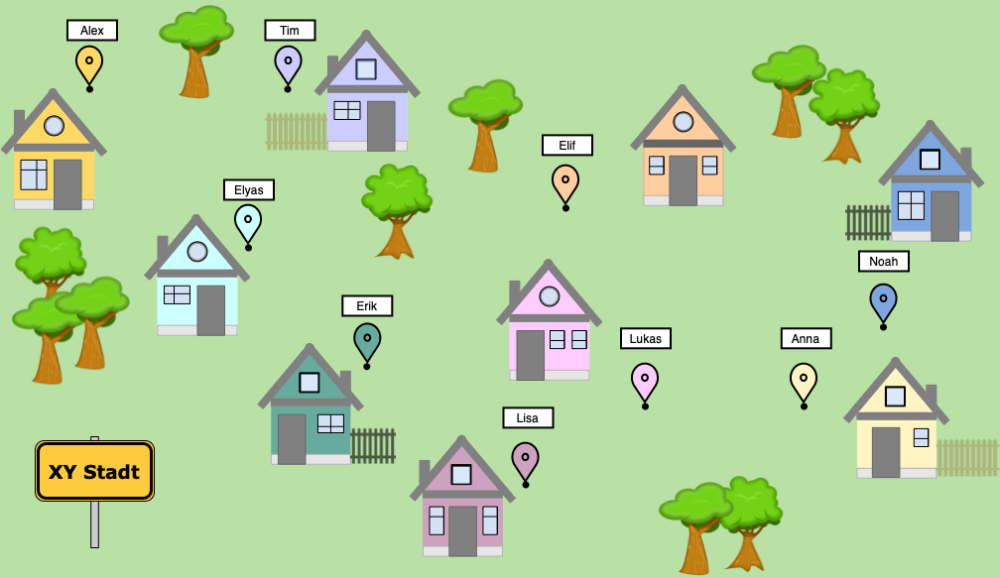

Welche Treffpunkte habt ihr ermittelt?

Unten könnt ihr eure beiden in Schritt 1 gewählten Treffpunkte eingeben. Der Computer berechnet davon ausgehend Treffpunkte mit dem k-medoid-Algorithmus. Vergleicht eure Lösung mit der Lösung des Computers. Auch die Zwischenschritte werden angezeigt, sodass ihr euer Vorgehen schrittweise vergleichen könnt.